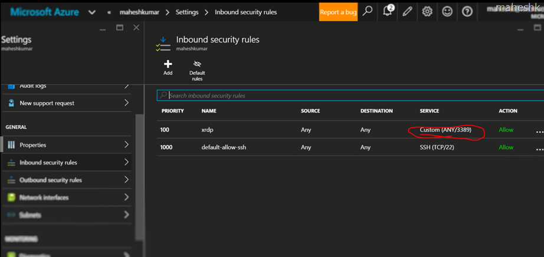
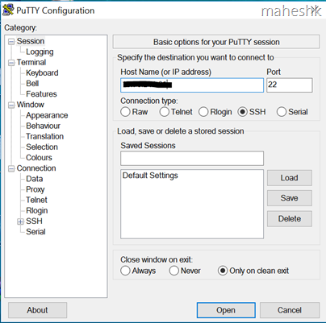
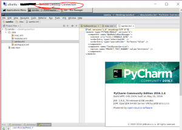

I ran into this issue after creating Azure Linux VM and attempting to configure RDP for the first time. At Linux side, I have installed Xrdp and configured for RDP access. But when I try to RDP from my windows machine then it failed. I spent few hours troubleshooting this issue without clue but later it turned out to be a “port” issue. Yes, by default Azure VM’s will expose or allow very limited port say 80,443 for Windows and in Linux Port 22 for SSH connection. So in order to enable RDP for Linux/Win machines, then you may have to add this port 3389 under “incoming security rules” as below.

I followed this blog post for xrdp setup up but nothing specific about Azure port as such. So thought of summarizing my learning here in steps to follow quickly for achieving RDP access to Azure Linux VM’s.
1) Login to new portal (portal.azure.com), Click “+ New” for adding resource, then select Virtual machine. You will find Ubuntu server OS list. Let say pick “Ubuntu Server 14.04.4 LTS”. Make sure to note down the Username, Password and Public IP(PIP) for later reference.
2) Once VM has been created, use Putty.exe to connect to the VM over SSH(Port 22) which is enabled by default. Enter the PIP and hit the connect button. You will get a console asking to enter username and password. Once provided, you will land in Linux terminal where we are going to execute the next set of commands in order.

3) Command to Install Desktop and xRDP at Linux VM side.
$ sudo apt-get update
$ sudo apt-get install ubuntu-desktop
$ sudo apt-get install xfce4
$ sudo apt-get install xrdp
$ echo xfce4-session >~/.xsession
$ sudo nano /etc/xrdp/startwm.sh <attention to the last line, it should be exactly like this>
#!/bin/sh
if [ -r /etc/default/locale ]; then
. /etc/default/locale
export LANG LANGUAGE
fi
startxfce4
$ sudo service xrdp restart
4) Now go back to Azure portal and Add Port 3389 under Inbound security rule (as in the above screenshot). P.s:- 3389 is well known port used by Azure for RDP.
5) Now from Windows machine, Launch “mstsc” to input VIP and username & password to Xrdp.

P.s:- Clipboard copy not supported here.
I missed the step 4 and wasted quite a lot of time figuring out.
Hope this will save someone's time :) .
<update:7/21>
a. Finding the inbound rules is little tricky..
VM > settings > network interfaces >settings > NSG > select the NSG > settings > inbound rules
b. lately noticed our official article on this https://azure.microsoft.com/en-in/documentation/articles/virtual-machines-linux-classic-remote-desktop/
</update:7/21>
Update:8/1 - tips
1) exit ->logout, 2) sudo - -> (to get into root) 3) sudo passwd root
4) download any .deb (
tar xzvf file.tar.gz) extract, check for bin > say check for "sh" file -pycharm.sh, right click > execute
<Unsupported: 9/28/2016>
Unsupported: How to install xRDP for GUI remote access on Linux
https://blogs.msdn.microsoft.com/linuxonazure/2016/09/26/unsupported-how-to-install-xrdp-for-gui-remote-access-on-linux/
</Unsupported>
{kind=link}
{kind=link}
{kind=link}